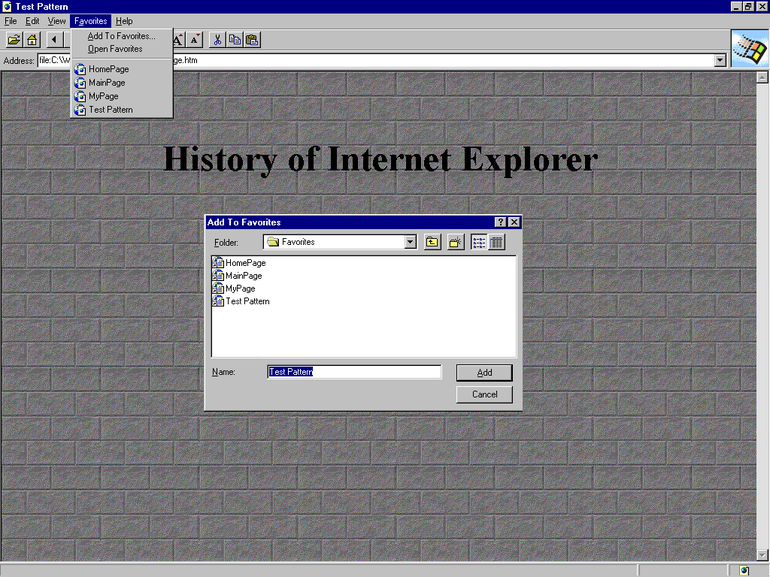

The History of Website Design
The World Wide Web was created in 1989 by Tim Berners-Lee. Berners-Lee wanted a solution to the difficulty of trying to find and access information stored on different computers and so proposed a system that made use of a database software program he wrote that would allow multiple connected machines to use Hypertext to jump between embedded documents and even multimedia like images and videos. After the connection was eventually set up Berners-Lee began work on his well known HTML system while also creating a basic browser software to handle it. The HTML system was partially derived from a similar tag-based language called SGMLguid and is ultimately used to be the base method of Website coding.
2 years after HTML was privately developed it was released freely to the public. The first webpages were originally just very basic HTML documents that used primitive browsers such as NCSA Mosaic or Netscape Navigator to render. HTML took multiple years before it was properly standardised under the publication of HTML 2.0 in 1995, which introduced new features and easier methods to style features of a website. Originally, all the styling would be done inside the HTML file and there wasn't as much customisation options as modern day styling, but many of the core features were in place.
The image to the left shows an example website opened in Internet Explorer version 1. Microsoft acquired Spyglass Inc.'s Mosaic browser and continued working on it until the release of Microsoft Edge, and as a result you can see that the browser itself was radically different approximately 20 years ago. Also shown is the early version of the favourites feature. A year later Microsoft released Internet Explorer 2 which included a huge amount of features that have since then become commonplace, such as JavaScript, cookies, SSL and support for multiple email protocols. An interesting feature also added was the ability for a user to import their Bookmarks from Netscape Navigator into IE2.
In 1994, 2 years after HTML was released to the public, CSS was proposed by Hakon Wium Lie. 2 years after the proposal, W3C (The International Standards Organisation) officially recommended the first CSS specification. With the introduction of CSS webpages began getting more sophisticated as new features were added that allowed web designers to have more control over how their webpage looked - as prior to CSS it would often be the browser's job to choose many visuals like fonts, colours, etc. instead of the website itself.
Throughout the years HTML, CSS and JavaScript have all been updated to add new features and outmode old ones. The design and complexity of many modern day websites would be absolutely unthinkable 25 years ago, and the browsers that we use now are also much more advanced since then and now include their own themes and extensions to enhance a user's experience.
Over time you might've noticed that websites have shifted from originally being very basic to becoming very complex and vibrant, with loads of elements altogether at once, and then in recent years the trend has come full circle and we are back to more minimalistic designs. There are many examples online of website redesigns, and a high majority of the time when you see a website design it will be a more simplified or better presented version of the previous style.
Bootstrap is a component library that is commonly used today by many web designers to create a template for their website. Sometimes you may notice that some websites look quite similar in their layout and that might be because they have both used the same Bootstrap template and then edited some of the styling. Bootstrap is very useful for creating a visually pleasing and relatively advanced webpage without needing to do too much work.